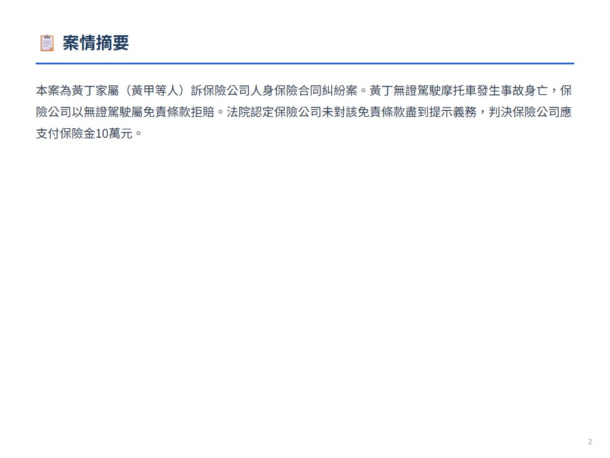
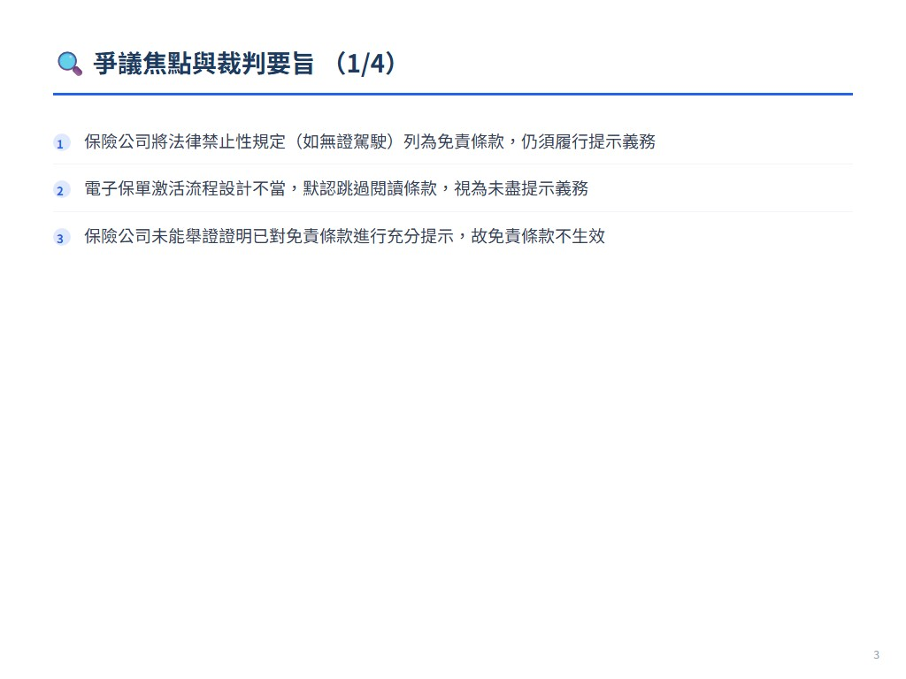
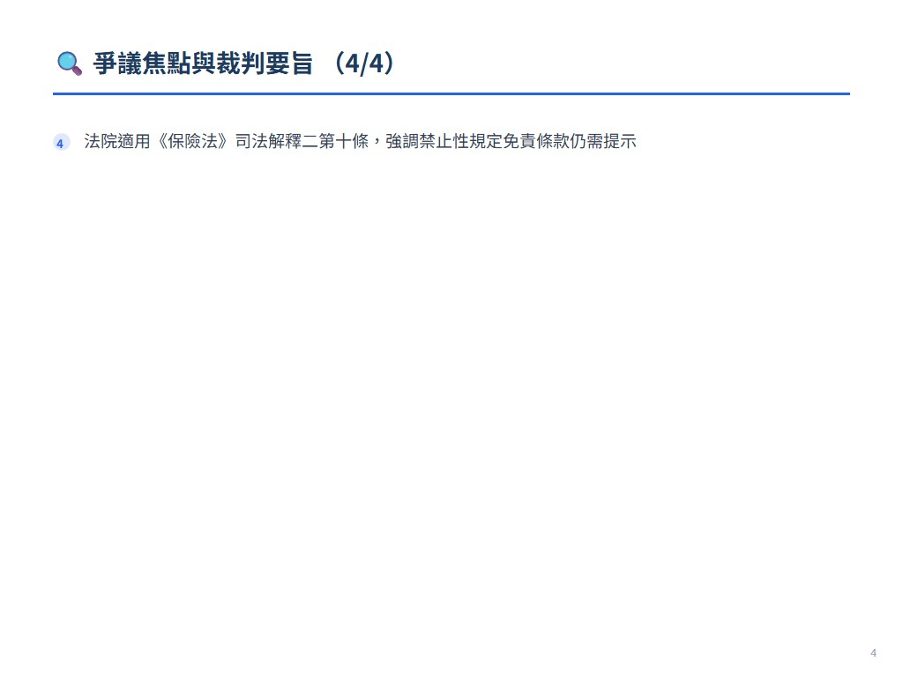
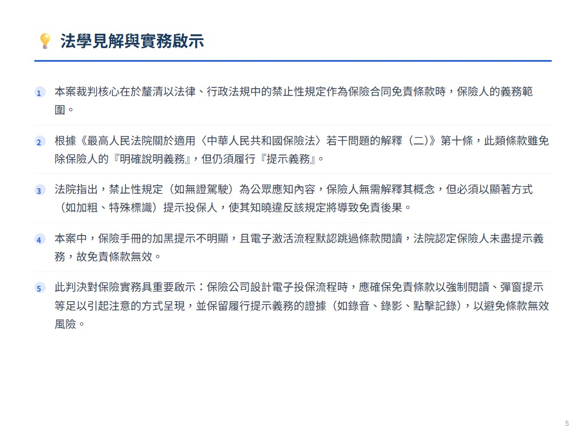
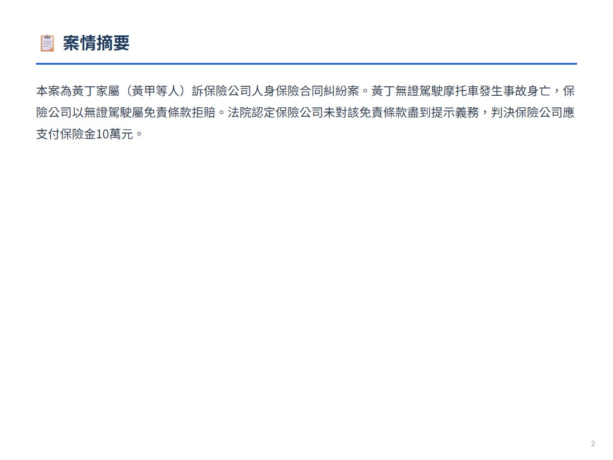
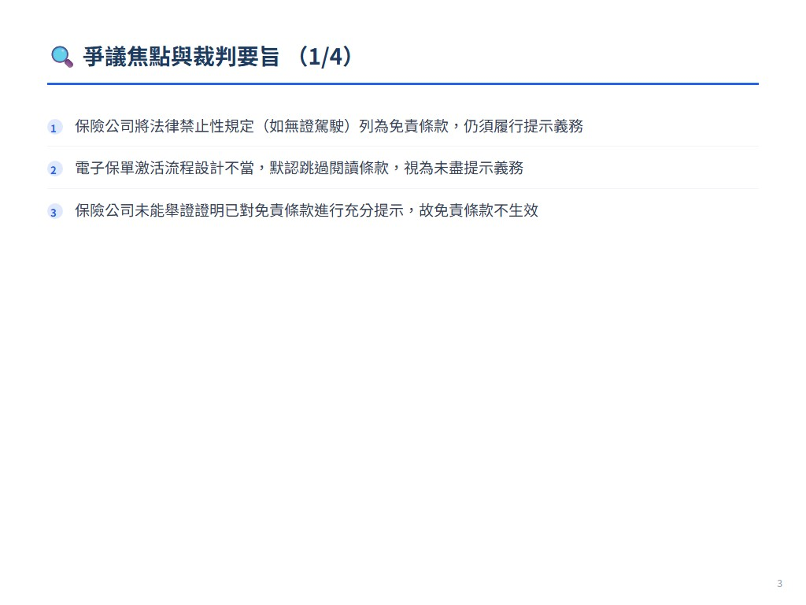
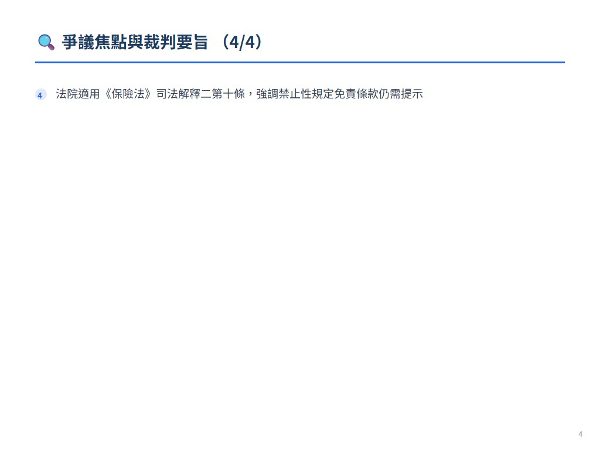
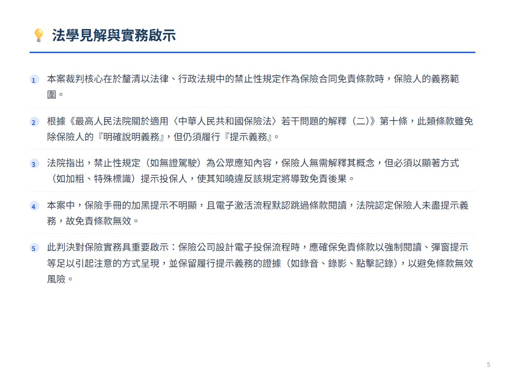

摘要
本案為黃丁家屬（黃甲等人）訴保險公司人身保險合同糾紛案。黃丁無證駕駛摩托車發生事故身亡，保險公司以無證駕駛屬免責條款拒賠。法院認定保險公司未對該免責條款盡到提示義務，判決保險公司應支付保險金10萬元。
爭議焦點與裁判要旨
- 保險公司將法律禁止性規定（如無證駕駛）列為免責條款，仍須履行提示義務
- 電子保單激活流程設計不當，默認跳過閱讀條款，視為未盡提示義務
- 保險公司未能舉證證明已對免責條款進行充分提示，故免責條款不生效
- 法院適用《保險法》司法解釋二第十條，強調禁止性規定免責條款仍需提示
法學見解
本案裁判核心在於釐清以法律、行政法規中的禁止性規定作為保險合同免責條款時，保險人的義務範圍。根據《最高人民法院關於適用〈中華人民共和國保險法〉若干問題的解釋（二）》第十條，此類條款雖免除保險人的『明確說明義務』，但仍須履行『提示義務』。法院指出，禁止性規定（如無證駕駛）為公眾應知內容，保險人無需解釋其概念，但必須以顯著方式（如加粗、特殊標識）提示投保人，使其知曉違反該規定將導致免責後果。本案中，保險手冊的加黑提示不明顯，且電子激活流程默認跳過條款閱讀，法院認定保險人未盡提示義務，故免責條款無效。此判決對保險實務具重要啟示：保險公司設計電子投保流程時，應確保免責條款以強制閱讀、彈窗提示等足以引起注意的方式呈現，並保留履行提示義務的證據（如錄音、錄影、點擊記錄），以避免條款無效風險。同時，強調了禁止性規定免責條款的特殊性——提示義務不可豁免，但說明義務可減輕，平衡了保險人與投保人的權益。
 








展開案例評析
福建省泉州市中级人民法院(2022)闽05民终1256号民事判决书
來源：《中國法院2024年度案例》保險糾紛 原始文件：15.保险纠纷.pdf 案號：福建省泉州市中级人民法院(2022)闽05民终1256号民事判决书 案由：人身保险合同纠纷 當事人：黄甲等诉保险公司人身保险合同案 分類：人身保险合同纠纷143
以禁止性规定情形作为保险合同免责条款并不免除保险人的提示义务 ——黄甲等诉保险公司人身保险合同案
案件基本信息
1.裁判书字号福建省泉州市中级人民法院(2022)闽05民终1256号民事判决书
2.案由：人身保险合同纠纷 3.当事人原告（被上诉人）：黄甲、胡某、黄乙、黄丙 被告（上诉人）：保险公司
基本案情
黄丁向保险公司投保了个人人身意外综合保险，意外身故保险金额人民币100000元，保险期间为2021年3月22日至2022年3月21日。2021年5月26 日6时57分，未取得相应驾驶资格的黄丁驾驶二轮摩托车时，与案外人王某驾驶的轻型厢式货车发生碰撞，导致黄丁受伤送医院抢救无效于当日死亡。黄甲、 胡某、黄乙、黄丙作为黄丁的第一顺位法定继承人，向保险公司主张要求赔付保险金。
案件焦点
保险合同将法律、行政法规中的禁止性规定列为免责条款，是否免除保险人对该部分免责条款的提示义务。
法院裁判要旨
福建省南安市人民法院经审理认为：该意外险卡单手册中对免责条款的加黑加粗提示并不明显。在操作电子保险卡的激活过程中，对保险条款的阅读选 项默认设置为打钩“已阅读”、可径直跳过保险条款的阅读过程而进行下一步激活步骤，可见保险公司对保险条款，特别是免责条款的提示说明义务也并未 尽责。 福建省南安市人民法院依照《中华人民共和国民法典》第四百九十六条、 第五百零九条，《中华人民共和国保险法》第二条、第十四条，《中华人民共和国民事诉讼法》第六十四条规定，判决： 保险公司应于本判决生效之日起三日内给付黄甲、胡某、黄乙、黄丙保险金人民币100000元。
二、人身保险合同纠纷145保险公司不服一审判决，提起上诉。 福建省泉州市中级人民法院经审理同意一审裁判意见，依照《中华人民共和国民事诉讼法》第一百七十七条第一款第一项规定，判决： 驳回上诉，维持原判。
法官后语
保险合同是常见的格式合同之一，《中华人民共和国保险法》第十七条规定了保险人应当就格式合同中的免责条款尽到明确说明和提示义务。实践中常 常出现将法律、行政法规中的禁止性规定作为保险合同免责条款，针对该部分免责条款是否仍要求保险人尽到提示和说明义务，《最高人民法院关于适用 <中华人民共和国保险法>若干问题的解释（二）》第十条作出了不同于一般免责条款的规定，即对该部分免责条款，保险人仅需尽到提示义务即可，无须 履行明确的说明义务。针对该规定，可以从以下几方面进行理解： 第一，以禁止性规定作为免责事由的免责条款不同于法定免责条款。“法律、行政法规中的禁止性规定”是指严格禁止当事人从事一定行为的强行性规 范，任何人都应当遵守。因该部分禁止性规定本就为普通民众所应知晓的常识性内容，应当区别于一般性免责条款，保险人无须再对其概念、内容和法律后 果作出明确说明。 第二，保险人将禁止性规定作为免责条款的，虽不再要求其尽到明确说明义务，但仍应向投保人进行提示和说明，即采用足以引起投保人注意的文字、 符号、字体等特别标识对该免责条款进行提示。如果保险人未对该部分免责条款进行提示，无法举证证实其尽到提示义务的，该免责条款不发生法律效力， 保险人仍应承担相应的保险赔付责任。 第三，保险人对以禁止性规定情形作为免责事由的免责条款进行提示后， 投保人、被保险人或者受益人不得再以保险人未履行明确说明义务为由主张该条款不生效。禁止性规定属于法律强制性规范，投保人对禁止性规定的概念和 内容应当是知道的，只是不知道被保险人违反禁止性规定将导致保险人免责的后果，故如果保险人就上述后果通过充分的提示使得投保人知道违反禁止性规
定与保险人免责之间的直接关联性，投保人、被保险人或者受益人不得再以保险人对该条款的概念、内容等未进行明确说明为由主张该条款不生效。 具体到本案，《最高人民法院关于适用<中华人民共和国保险法>若干问题的解释（二）》第十条规定：“保险人将法律、行政法规中的禁止性规定情 形作为保险合同免责条款的免责事由，保险人对该条款作出提示后，投保人、 被保险人或者受益人以保险人未履行明确说明义务为由主张该条款不生效的， 人民法院不予支持。”据此，无证驾驶属于法律禁止性规定，保险公司将无证驾驶作为免责条款，仍应向投保人履行提示义务。本案黄丁支付保险费取得激 活卡保险手册时，保险手册对上述免责条款的加黑加粗提示并不明显，保险公司亦未能举证证明对保险手册的上述免责条款已履行提示义务。而在操作电子 保险卡的激活过程中，无论黄卯是保险公司的代理人，还是黄丁的熟人，保险公司提供的证据亦不足以证明在激活过程中其通过网页、音频、视频等形式履 行了提示义务。故，保险公司对上述免责条款未履行提示义务，上述免责条款不发生效力，保险公司应依约支付保险金。 编写人：福建省南安市人民法院黄婷婷